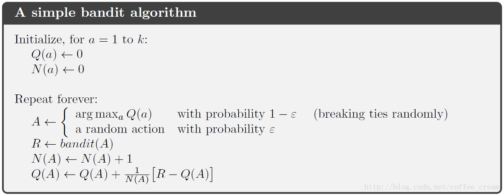
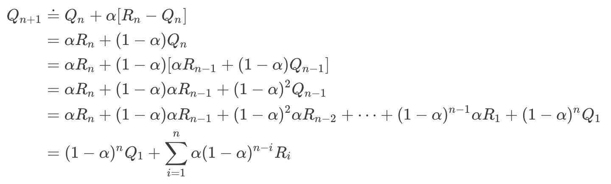

Multi-Arm Bandits问题
Multi-Arm Bandits问题是从赌场中的多臂老虎机中提取的数学问题，可以使用强化学习来解决。本文参考于博客链接
问题介绍
一个赌徒，去赌场摇老虎机，发现老虎机共有$M$个摇杆，摇动任意一个摇杆都有一定概率获得金币，但是每个摇杆出金币的概率不一样，且对于赌徒来说是未知的，那么在每次选择摇动哪个摇杆时，如何进行决策来最大化收益呢？
显然，在这个问题下，每一回合一共有$M$个action可以选择（对应摇动$M$个摇杆之一），每个action都有一个服从某种概率分布的reward。将第$t$次执行的动作action记为$A_t$，其对应的奖励reward记为$R_t$，奖励在该摇杆的分布中的真实期望值记为$q_(a)$，因此有$q_(a)=E[R_t|A_t=a]$
如果我们知道所有摇杆的$q_*(a)$，那么问题就解决了，但是显然没有这么简单，我们无从得知真实的奖励期望值。
强化学习下的解决方法
使用强化学习来构造$Q_(a)\approx q_(a)$，而最简单的方式就是令$Q_*(a)$等于动作$a$的历史奖励的平均值，即：
其中，当$A_i=a$为真时，$l_{A_i=a}=1$，否则等于0
那么，每次都选择动作$a=\underset {a}{argmax}\, Q_*(a)$就可以了。
存在的问题（1）
然而，简单按照上面的方法执行下去还存在着一个巨大的问题，就是只利用了当前已知的信息，没有开发未知的操作，这样就会出问题。举个例子，如果赌徒在第一次进行摇杆操作时随机选择了中奖概率为50%的摇杆$arm_x$，并且获得了奖励，那么$Q_(a_x)=1$，而另一个摇杆$arm_y$的中奖概率为90%，但是赌徒第二次选择摇动$arm_y$时恰好没有中奖，于是$Q_(a_y)=0$，这样根据已有知识，赌徒就会在接下来的回合一直选择摇动摇杆$arm_x$。这样显然是不合理的，因此我们需要适当地开发未知的领域，要给那些$Q_*(a)$较低的摇杆一些机会证明自己。
所以，赌徒在进行动作决策时，应该有两种操作：
- exploit操作：根据已有的知识进行动作的最优选择，可以最大化当前步的奖励。
- explore操作：不选择当前最优的动作，去探索其他动作，可以提高对行为准确值的估计准确度。
$\epsilon-$greedy方法
引入一个较小的常量$\epsilon$，并且有$0<\epsilon <1$，在每次进行决策时，以$1-\epsilon$的概率选择$a=\underset {a}{argmax}\, Q_*(a)$，以$\epsilon$的概率从所有摇杆中以相等的概率随机选择一个摇杆。这种方法称为$\epsilon-$greedy方法，可以缓解前面存在的问题。
p.s.也可以将所有动作的初始估计期望值$Q_*(a)$设置为一个较大的值，而不是0，这样鼓励赌徒去进行explore操作。
存在的问题（2）
但是前面的方法还存在一个问题。随着回合数的增多，要将所有回合的历史记录全部记录下来并平均，开销很大。
增量式实现
在$\epsilon-$greedy方法的基础上，可以进行增量式实现来解决问题（2）。
为了简化符号，这里只关注一个动作action，将第$i$次执行该动作时获得的奖励记为$R_i$，$Q_n$代表该动作执行了$n$次之后的期望估计值。那么有：
可以看到增量式实现是在旧的估计值上添加估计值与实际值的误差乘以$\frac{1}{n}$（随回合数变化，可以理解为step-size）来获得新的估计值。算法伪代码如下图：

存在的问题（3）及其解决方案
之前讨论的问题都是一个不变的环境，如果每个摇杆的中奖概率会随着时间发生改变呢？那么显然需要在进行增量式更新的时候不要令step-size随着时间的推移而越来越小（如$\frac{1}{n}$），最常用的方法是将其设为一个常数$\alpha\in(0,1]$，即：$Q_{n+1}\dot{=}Q_n+\alpha[R_n-Q_n]$
对该式进行分解得到：

又因为$(1-\alpha)^n+\sum_{i=a}^n\alpha (1-\alpha)^{n-i}=1$，因此可以将上式看作一种加权平均。由于$1-\alpha <1$，因此$i$越大，赋予$R_i$的权重越大，也就是越新的奖励对估计值的影响越大。
Upper-Confidence-Bound Action Selection
$\epsilon-$greedy被认为不是最优的explore方式，应该将每个action的评估值和不确定性均考虑在内，即下式：
$A_t\dot{=}\underset{a}{argmax}[Q_t(a)+c\sqrt{\frac{\log t}{N_t(a)}}]$
其中$\log$指的是自然对数，$N_t(a)$指的是动作$a$在回合$t$被执行的次数，常数$c>0$代表的是赋予explore的权重。
参考文献：
[1] Reinforcement Learning: An Introduction, Richard S. Sutton and Andrew G. Barto
[2] UCL Course on RL
[3] https://blog.csdn.net/coffee_cream/article/details/58034628